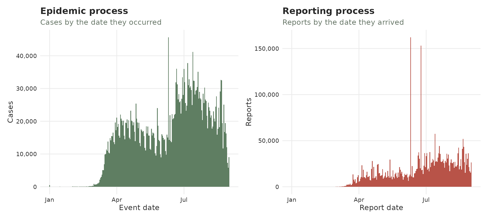
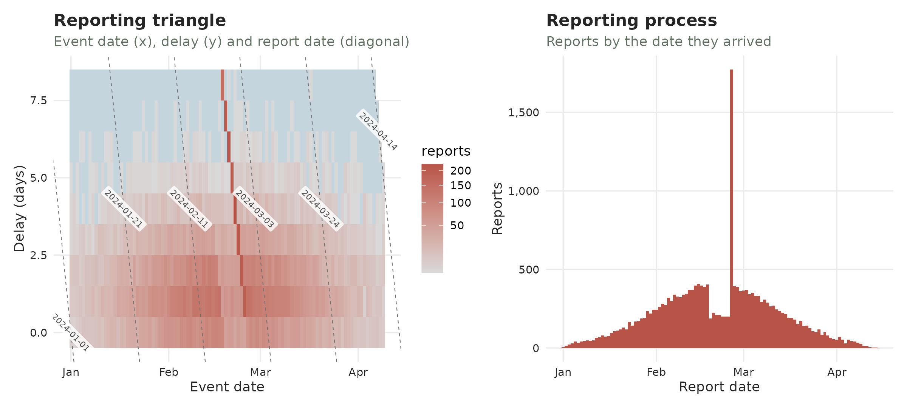
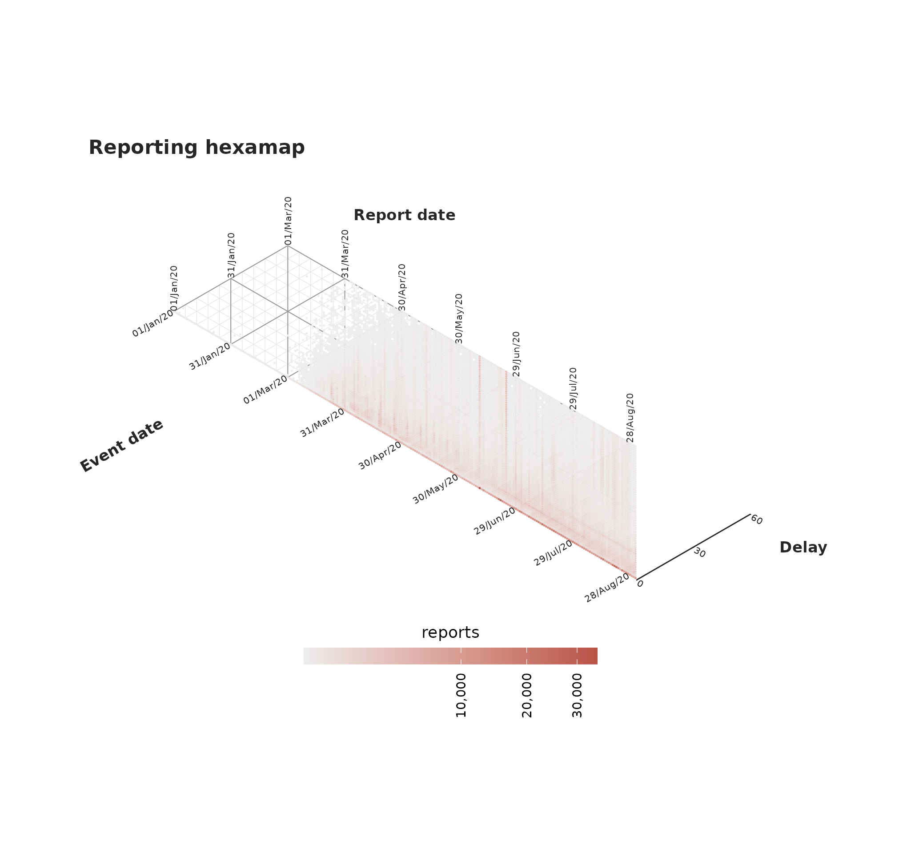
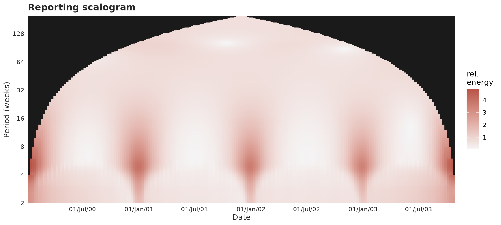
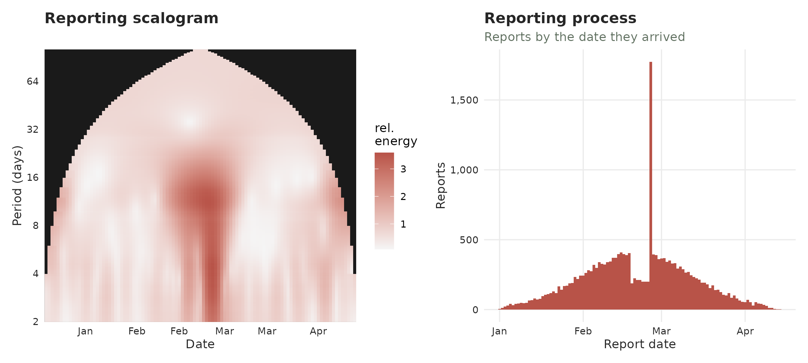
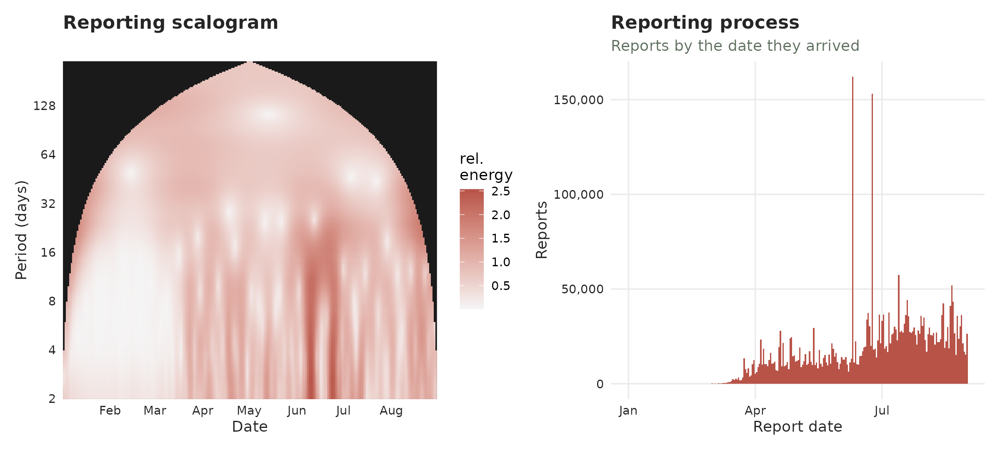
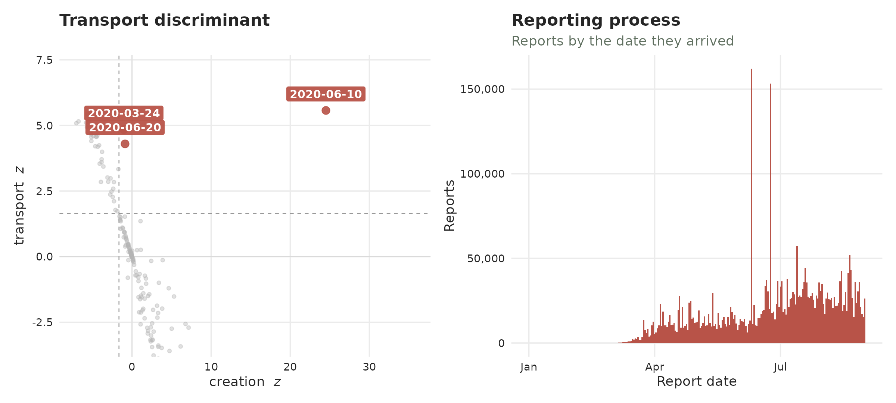
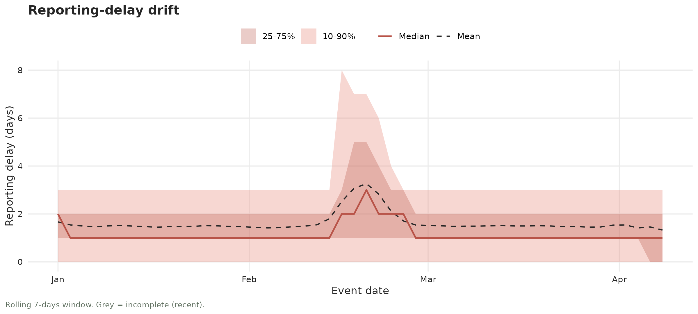
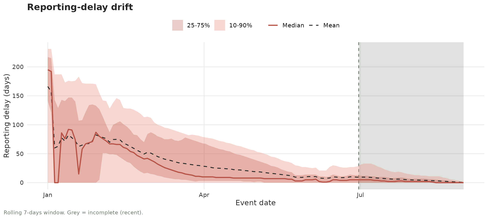
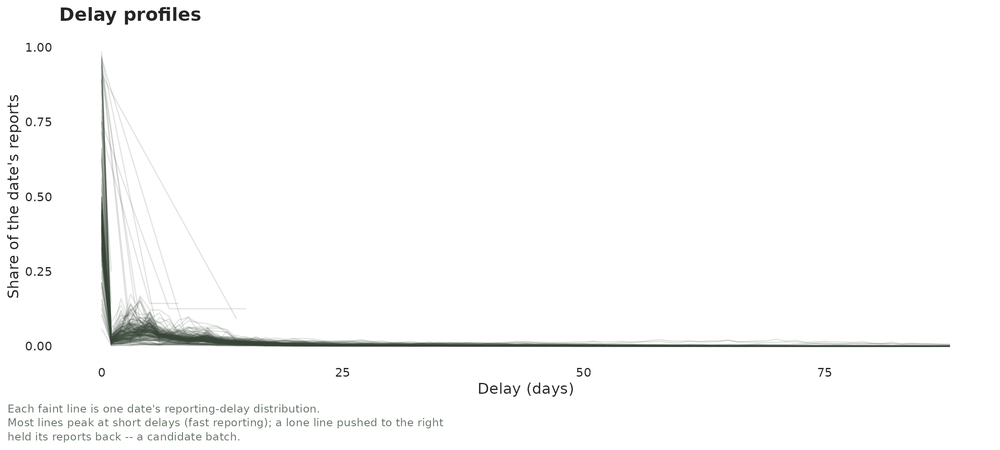

Diagnosing a tbl_now
diagnosing-a-tbl-now.RmdThree questions come up with every new surveillance dataset, and they are different questions that want different tools:
-
What is in it? – how many cases, over what period,
arriving how late, how sparse, how concentrated in one stratum.
summary()answers this. -
What is structurally wrong with it? – missing
dates, impossible orderings, repeated rows, units that do not line up,
data that stops before its own
now.diagnose()answers this, deterministically and with no model. -
What needs a statistical test? – has the reporting
delay drifted, did reports arrive in batches, is a spike real cases or
released backlog.
diagnose()deliberately refuses these and hands you a signpost instead, because answering them means choosing a method, a window and a multiplicity correction.
This article walks the three in order. The first two return a
tibble, not printed text, which is the design decision
everything else follows from: an answer you can filter(),
join(), plot or assert on in a test is worth far more than
one you can only read. The third returns test results and figures,
because a hypothesis test has a p-value and an effect size that a
findings row has nowhere to put.
data(denguedat)
dengue_now <- tbl_now(denguedat,
event_date = "onset_week",
report_date = "report_week",
strata = "gender",
verbose = FALSE
)Part 1 — What is in the data: summary()
One table, several blocks
summary() returns a table, and prints it one
component at a time with the columns that component
does not populate dropped — the schema is wide because it has to hold
every block at once, and no single block fills more than a handful of
it:
summary(dengue_now)
#> ── Summary of a <tbl_now> ──────────────────────────────────────────────────────────────────────────────────────────────────────────────────────────────────────
#> 76 rows in 7 components; strata: "Female" and "Male".
#>
#> cases
#> quantity stratum n total mean sd min q25 q50 q75 q90 max prop_zero
#> <chr> <chr> <int> <dbl> <dbl> <dbl> <dbl> <dbl> <dbl> <dbl> <dbl> <dbl> <dbl>
#> 1 per_event_date all 1095 52987 48.4 53.3 0 14 30 64 104 358 0.00365
#> 2 per_event_date Female 1095 26592 24.3 26.7 0 7 15 32 52 189 0.0119
#> 3 per_event_date Male 1095 26395 24.1 27.0 0 7 15 31 53 176 0.0119
#> 4 per_report_date all 1095 52987 48.4 54.3 0 14 29 64 111 420 0.00274
#> 5 per_report_date Female 1095 26592 24.3 27.3 0 7 15 32 57 217 0.0155
#> 6 per_report_date Male 1095 26395 24.1 27.5 0 7 15 32 54 203 0.0201
#>
#> zero_run
#> quantity stratum n total mean sd min q25 q50 q75 q90 max
#> <chr> <chr> <int> <dbl> <dbl> <dbl> <dbl> <dbl> <dbl> <dbl> <dbl> <dbl>
#> 1 event_date all 2 4 2 1.41 1 1 1 3 3 3
#> 2 event_date Female 10 13 1.3 0.675 1 1 1 1 2 3
#> 3 event_date Male 8 13 1.62 0.916 1 1 1 2 3 3
#> 4 report_date all 3 3 1 0 1 1 1 1 1 1
#> 5 report_date Female 15 17 1.13 0.352 1 1 1 1 2 2
#> 6 report_date Male 19 22 1.16 0.501 1 1 1 1 2 3
#>
#> autocorrelation
#> quantity stratum n value
#> <chr> <chr> <int> <dbl>
#> 1 per_event_date lag 1 all 1094 0.958
#> 2 per_event_date lag 1 Female 1094 0.944
#> 3 per_event_date lag 1 Male 1094 0.941
#> 4 per_report_date lag 1 all 1094 0.885
#> 5 per_report_date lag 1 Female 1094 0.867
#> 6 per_report_date lag 1 Male 1094 0.878
#>
#> composition
#> quantity n total prop
#> <chr> <int> <dbl> <dbl>
#> 1 strata = Female 4133 26592 0.502
#> 2 strata = Male 4132 26395 0.498
#>
#> coverage
#> quantity stratum n total date_min date_max
#> <chr> <chr> <int> <dbl> <date> <date>
#> 1 total_cases all 8265 52987 NA NA
#> 2 event_date all 1091 52987 1990-01-01 2010-11-29
#> 3 report_date all 1092 52987 1990-01-01 2010-12-20
#> 4 total_cases Female 4133 26592 NA NA
#> 5 event_date Female 1082 26592 1990-01-01 2010-11-29
#> 6 report_date Female 1078 26592 1990-01-01 2010-12-20
#> 7 total_cases Male 4132 26395 NA NA
#> 8 event_date Male 1082 26395 1990-01-01 2010-11-29
#> 9 report_date Male 1073 26395 1990-01-01 2010-12-13
#> 10 now all NA NA 2010-12-20 2010-12-20
#> ℹ 19 more rows.
#>
#> completeness
#> quantity stratum n total mean sd min q25 q50 q75 q90 max prop
#> <chr> <chr> <int> <dbl> <dbl> <dbl> <dbl> <dbl> <dbl> <dbl> <dbl> <dbl> <dbl>
#> 1 delay <= 0 all 1090 2099 0.0381 0.0533 0 0 0.0220 0.0594 0.1 0.5 0.0396
#> 2 delay <= 1 all 1090 26595 0.510 0.175 0 0.410 0.510 0.618 0.710 1 0.502
#> 3 delay <= 2 all 1090 44988 0.844 0.130 0 0.781 0.867 0.930 1 1 0.850
#> 4 delay <= 3 all 1090 49837 0.931 0.0850 0.104 0.9 0.953 1 1 1 0.941
#> 5 delay <= 4 all 1090 51451 0.963 0.0597 0.5 0.949 0.984 1 1 1 0.972
#> 6 delay <= 5 all 1090 52126 0.978 0.0449 0.5 0.972 1 1 1 1 0.984
#> 7 delay <= 6 all 1090 52505 0.988 0.0330 0.5 0.990 1 1 1 1 0.992
#> 8 delay <= 7 all 1090 52668 0.992 0.0275 0.5 1 1 1 1 1 0.995
#> 9 delay <= 0 Female 1081 1039 0.0367 0.0670 0 0 0 0.0556 0.111 1 0.0391
#> 10 delay <= 1 Female 1081 13313 0.509 0.214 0 0.384 0.514 0.635 0.75 1 0.501
#> ℹ 14 more rows.
#>
#> delay
#> quantity stratum n total mean sd min q25 q50 q75 q90 max
#> <chr> <chr> <int> <dbl> <dbl> <dbl> <dbl> <dbl> <dbl> <dbl> <dbl> <dbl>
#> 1 event_to_report all 8265 52987 1.74 1.21 0 1 1 2 3 26
#> 2 event_to_report Female 4133 26592 1.74 1.20 0 1 1 2 3 15
#> 3 event_to_report Male 4132 26395 1.74 1.22 0 1 1 2 3 26
#>
#> ℹ Use `dplyr::filter()` or `tibble::as_tibble()` for the full schema.Underneath it is an ordinary tibble, so every dplyr verb
works on it and tibble::as_tibble() gives the full schema
back. The component column says which block a row belongs
to:
summary(dengue_now) |>
count(component)
#> # A tibble: 7 × 2
#> component n
#> <chr> <int>
#> 1 autocorrelation 6
#> 2 cases 6
#> 3 completeness 24
#> 4 composition 2
#> 5 coverage 29
#> 6 delay 3
#> 7 zero_run 6Every row is one quantity, described by up to eighteen columns. Not
every column applies to every row — a delay distribution has a
mean but no prop, a proportion has a
prop but no q90 — so the table is deliberately
sparse:
summary(dengue_now) |>
filter(component == "cases") |>
select(component, quantity, stratum, n, total, mean, sd, min, q50, q90, max, prop_zero)
#> ── Summary of a <tbl_now> ──────────────────────────────────────────────────────────────────────────────────────────────────────────────────────────────────────
#> 6 rows in 1 component; strata: "Female" and "Male".
#>
#> cases
#> quantity stratum n total mean sd min q50 q90 max prop_zero
#> <chr> <chr> <int> <dbl> <dbl> <dbl> <dbl> <dbl> <dbl> <dbl> <dbl>
#> 1 per_event_date all 1095 52987 48.4 53.3 0 30 104 358 0.00365
#> 2 per_event_date Female 1095 26592 24.3 26.7 0 15 52 189 0.0119
#> 3 per_event_date Male 1095 26395 24.1 27.0 0 15 53 176 0.0119
#> 4 per_report_date all 1095 52987 48.4 54.3 0 29 111 420 0.00274
#> 5 per_report_date Female 1095 26592 24.3 27.3 0 15 57 217 0.0155
#> 6 per_report_date Male 1095 26395 24.1 27.5 0 15 54 203 0.0201
#>
#> ℹ Use `dplyr::filter()` or `tibble::as_tibble()` for the full schema.stratum is always “which subset of the data does this
row describe”: "all" for the pooled rows, or a stratum
label. The category of a compositional row goes in
quantity instead, which keeps the two ideas from
colliding:
The blocks worth knowing
delay — the case-weighted reporting
delay. Weighted means “equal to what you would get by expanding the
counts to one row per case”, so it needs no separate explanation:
delay_summary(dengue_now) |>
select(quantity, stratum, n, total, mean, sd, q50, q90, max)
#> # A tibble: 3 × 9
#> quantity stratum n total mean sd q50 q90 max
#> <chr> <chr> <int> <dbl> <dbl> <dbl> <dbl> <dbl> <dbl>
#> 1 event_to_report all 8265 52987 1.74 1.21 1 3 26
#> 2 event_to_report Female 4133 26592 1.74 1.20 1 3 15
#> 3 event_to_report Male 4132 26395 1.74 1.22 1 3 26completeness — the share of each event
date’s eventual total that had arrived by delay d. This is
usually the most decision-relevant block in the table, because it says
how far back a nowcast has anything left to estimate:
reporting_completeness(dengue_now, delays = 0:4) |>
filter(stratum == "all") |>
select(quantity, n, mean, q50, prop)
#> # A tibble: 5 × 5
#> quantity n mean q50 prop
#> <chr> <int> <dbl> <dbl> <dbl>
#> 1 delay <= 0 1090 0.0381 0.0220 0.0396
#> 2 delay <= 1 1090 0.510 0.510 0.502
#> 3 delay <= 2 1090 0.844 0.867 0.850
#> 4 delay <= 3 1090 0.931 0.953 0.941
#> 5 delay <= 4 1090 0.963 0.984 0.972Four percent of a week’s cases are in by the end of that week, half by the end of the next, and 94% by three weeks. Beyond about three weeks there is very little missing to reconstruct.
zero_run — how sparse the series is,
measured as runs of consecutive zero dates rather than as a simple
proportion. A series that is 30% zeros scattered at random is a very
different modelling problem from one that is 30% zeros in three long
gaps:
zero_run_summary(dengue_now, axis = "event") |>
select(quantity, stratum, n, total, mean, q50, max)
#> # A tibble: 3 × 7
#> quantity stratum n total mean q50 max
#> <chr> <chr> <int> <dbl> <dbl> <dbl> <dbl>
#> 1 event_date all 2 4 2 1 3
#> 2 event_date Female 10 13 1.3 1 3
#> 3 event_date Male 8 13 1.62 1 3coverage — the reach of the object,
including how stale it is:
triangle_occupancy(dengue_now) |>
filter(stratum == "all") |>
select(quantity, n, value)
#> # A tibble: 6 × 3
#> quantity n value
#> <chr> <int> <dbl>
#> 1 max_delay NA 26
#> 2 triangle_cells_observed 5154 NA
#> 3 triangle_cells_possible 29214 NA
#> 4 triangle_occupancy NA 0.176
#> 5 now_gap_event NA 3
#> 6 now_gap_report NA 0Every block is also a function
summary() is exactly the bind_rows() of its
components, and each one is exported, so you can ask a single question
without computing the rest:
prop_strata(dengue_now) |>
select(quantity, total, prop)
#> # A tibble: 2 × 3
#> quantity total prop
#> <chr> <dbl> <dbl>
#> 1 strata = Female 26592 0.502
#> 2 strata = Male 26395 0.498The full set is cases_per_date(),
delay_summary(), zero_run_summary(),
prop_censored(), prop_validation_type(),
prop_strata(), prop_covariate_levels(),
case_autocorrelation(), date_ranges(),
triangle_occupancy(), reporting_completeness()
and cumulative_growth().
Quantiles are inverse-ECDF (type 1).
q50 is the smallest value whose cumulative weight reaches
0.5 — for an even number of observations, the upper of the two middle
values rather than their average. This is the same estimator
autoplot() and plot_delay_drift() use, so the
table and the figures always agree, and for count data it always returns
a value that was actually observed. A half-case delay is not.
Part 2 — What is structurally wrong: diagnose()
Findings, worst first
diagnose() prints as a report: the errors, warnings and
notes in full, each with its hint, and one line each for the checks that
passed, that were deliberately not run, and that could not be assessed.
print(x, all = TRUE) spells those out too.
diagnose(dengue_now)
#> ── Diagnosis of a <tbl_now> ────────────────────────────────────────────────────────────────────────────────────────────────────────────────────────────────────
#> 9 notes, 14 passed, 3 not run, 6 skipped.
#>
#> Notes (9)
#> ℹ now/now_gap_event [Female]: The last event date is 3 weeks before now ("2010-12-20").
#> → Everything in that window is still arriving; it is what a nowcast is for, and it is also what makes the last points of any plot look like a decline.
#> ℹ now/now_gap_event [Male]: The last event date is 3 weeks before now ("2010-12-20").
#> ℹ now/now_gap_event: The last event date is 3 weeks before now ("2010-12-20").
#> ℹ now/now_gap_report [Male]: The last report date is 1 week before now ("2010-12-20").
#> ℹ strata/size [Male]: The smallest stratum is "Male" with 26395 cases, 49.8% of the total.
#> ℹ strata/sparsity [Female]: The sparsest stratum is "Female": 1.2% of the event dates on the grid carry no cases at all.
#> → A stratum that is mostly zeros is the one a per-stratum fit will struggle with; pooling it is often better than fitting it.
#> ℹ truncation/event_date [Female]: 1 event date is younger than the 95th percentile of the delay, so its counts are still filling in; an estimated 5.8% of its eventual total has not arrived.
#> → This is right-truncation, and it is the reason to nowcast rather than a defect. Cut the series at "2010-11-22" to describe it instead.
#> ℹ truncation/event_date [Male]: 1 event date is younger than the 95th percentile of the delay, so its counts are still filling in; an estimated 5.9% of its eventual total has not arrived.
#> ℹ truncation/event_date: 1 event date is younger than the 95th percentile of the delay, so its counts are still filling in; an estimated 5.9% of its eventual total has not arrived.
#>
#> Not run (3)
#> → signposts/report: Run: diagnose_drift(x, axis = "report")
#> → `diagnose()` runs no statistical test: a trend test needs a method, a maturity window and an alpha, and those are the caller's to choose.
#> → signposts/report_batches: Run: diagnose_batches(x, axis = "report")
#> → `diagnose()` runs no statistical test: batch detection needs a look-back, a null model and a multiplicity correction.
#> → signposts/validation_batches: Run: diagnose_batches(x, axis = "validation")
#>
#> ✔ 14 passed: declarations/temporal_effects, declarations/undeclared, missing/gender, missing/onset_week, missing/report_week, now/event_date, now/now_gap_report, now/report_date, ordering/event_to_report, units/declared, units/delay, units/event_grid, and units/report_grid
#> ─ 6 skipped: duplicates/key, negatives/count, ordering/event_to_validation, ordering/report_to_validation, signposts/validation, and strata/pending
#>
#> ℹ 32 findings. Use `dplyr::filter()` or `tibble::as_tibble()` for the table.It is a tibble underneath, in the schema the rest of this section reads:
diagnose(dengue_now) |>
count(status)
#> # A tibble: 4 × 2
#> status n
#> <ord> <int>
#> 1 note 9
#> 2 ok 14
#> 3 not_run 3
#> 4 skipped 6status is an ordered factor —
error > warning > note >
ok > not_run > skipped — so
the table sorts itself and filtering to what needs acting on is a
comparison rather than a set membership test:
diagnose(dengue_now) |>
filter(status <= "note") |>
select(check, scope, stratum, status, n_affected, n_total, message)
#> # A tibble: 9 × 7
#> check scope stratum status n_affected n_total message
#> <chr> <chr> <chr> <ord> <dbl> <dbl> <chr>
#> 1 now now_gap_event Female note 3 NA "The last event date is 3 weeks before now (\"2010-12-20\")."
#> 2 now now_gap_event Male note 3 NA "The last event date is 3 weeks before now (\"2010-12-20\")."
#> 3 now now_gap_event all note 3 NA "The last event date is 3 weeks before now (\"2010-12-20\")."
#> 4 now now_gap_report Male note 1 NA "The last report date is 1 week before now (\"2010-12-20\")."
#> 5 strata size Male note 26395 52987 "The smallest stratum is \"Male\" with 26395 cases, 49.8% of the total."
#> 6 strata sparsity Female note 13 1095 "The sparsest stratum is \"Female\": 1.2% of the event dates on the grid carry no cases at all."
#> 7 truncation event_date Female note 1 1082 "1 event date is younger than the 95th percentile of the delay, so its counts are still filling i…
#> 8 truncation event_date Male note 1 1082 "1 event date is younger than the 95th percentile of the delay, so its counts are still filling i…
#> 9 truncation event_date all note 1 1091 "1 event date is younger than the 95th percentile of the delay, so its counts are still filling i…Each finding also carries a hint saying what to do about
it, and a rows list-column of the offending row indices, so
you can go straight to them:
The six statuses, and why skipped is not
ok
The distinction that matters most is between a check that ran and found nothing and one that could not run:
diagnose(dengue_now) |>
filter(status == "skipped") |>
select(check, scope, message)
#> # A tibble: 6 × 3
#> check scope message
#> <chr> <chr> <chr>
#> 1 duplicates key A line list is one row per case, so identical rows are two cases rather than a repeat.
#> 2 negatives count A line list has no count column to go negative.
#> 3 ordering event_to_validation The object carries no validation process.
#> 4 ordering report_to_validation The object carries no validation process.
#> 5 signposts validation The object carries no validation process.
#> 6 strata pending The object carries no validation process.dengue_now is a line list with no validation process, so
four checks have nothing to work on. None of them is a pass. Reporting
them as ok would be a quiet lie, and this is the single
most common way a health check misleads: silence that reads as
approval.
Note the first row in particular. diagnose()
will not look for duplicate records in a line list, because a
line list is one row per case — two identical rows are two infections,
not a repeat. Deduplicating a line list needs a key the object does not
have (a record id, say), so that check stays yours.
Structural, never statistical
diagnose() runs no statistical tests at all. It is fast,
and its answer never depends on a random seed or an optional package.
The questions that do need a test come back as
not_run signposts naming the call that answers each
one:
diagnose_signposts(dengue_now) |>
select(scope, status, message)
#> # A tibble: 4 × 3
#> scope status message
#> <chr> <ord> <chr>
#> 1 report not_run "Run: diagnose_drift(x, axis = \"report\")"
#> 2 report_batches not_run "Run: diagnose_batches(x, axis = \"report\")"
#> 3 validation_batches not_run "Run: diagnose_batches(x, axis = \"validation\")"
#> 4 validation skipped "The object carries no validation process."Those calls — diagnose_drift(),
diagnose_changepoint(), diagnose_batches(),
diagnose_batch_shape() — are Part 3 of this article. They
return their own shapes rather than the findings schema, because a
hypothesis test has a p-value and an effect size that a findings row has
nowhere to put.
Cumulative data: the revisions
Cumulative counts get revised downwards, and a downward revision
becomes a negative increment the moment the series is
de-accumulated. Anything consuming incidence has to cope with that, so
diagnose() counts them. FluSight is the standard
example:
data(flusight)
flu_now <- flusight |>
filter(location_name %in% c("Alabama", "Alaska", "Arizona"),
target_end_date >= as.Date("2023-01-01")) |>
tbl_now(
event_date = target_end_date,
report_date = as_of,
case_count = observation,
strata = location_name,
data_type = "count-cumulative",
verbose = FALSE
)
diagnose_negatives(flu_now) |>
select(scope, stratum, status, n_affected, n_total, message)
#> # A tibble: 4 × 6
#> scope stratum status n_affected n_total message
#> <chr> <chr> <ord> <dbl> <dbl> <chr>
#> 1 increment Alabama note 73 5499 73 de-accumulated increments are negative (total -175).
#> 2 increment Alaska note 12 5499 12 de-accumulated increments are negative (total -26).
#> 3 increment Arizona note 71 5499 71 de-accumulated increments are negative (total -7522).
#> 4 increment all note 156 16497 156 de-accumulated increments are negative (total -7723).For cumulative data summary() also swaps its
delay block for a growth one — the ratio of
one delay’s running total to the previous one’s — because a cumulative
total is not additive across delays and a case-weighted delay
distribution would be meaningless:
cumulative_growth(flu_now, k = 3) |>
filter(stratum == "all") |>
select(quantity, n, total, mean, q50, max)
#> # A tibble: 3 × 6
#> quantity n total mean q50 max
#> <chr> <int> <dbl> <dbl> <dbl> <dbl>
#> 1 delay 1 64 2024 1.08 1 3.44
#> 2 delay 2 75 -103 1.01 1 1.78
#> 3 delay 3 81 -1042 0.993 1 1.72The mean ratio falls below 1 by the third delay, and the totals go
negative: these series shrink on revision more often than they grow.
delay_summary() refuses to run on this object at all, and
says why.
The same findings, two presentations
validate_tbl_now() runs the same engine
as diagnose(). It does not return the findings; it re-emits
the error rows as an abort and the warning
rows as warnings. That is why a malformed object complains the moment
you build it, and why the two can never drift apart:
bad <- denguedat |>
mutate(report_week = report_week - 400) |>
tbl_now(event_date = "onset_week", report_date = "report_week", verbose = FALSE)The warning above and the ordering row of
diagnose(bad) are the same finding, formatted for two
different audiences: one for a person who is about to make a mistake,
one for a program that needs to decide what to do.
note rows are deliberately never promoted to warnings.
validate_tbl_now() runs on every dplyr verb,
so a new warning there would turn a quiet construction into a noisy one
for data that has always been accepted.
Part 3 — What needs a statistical test: reporting artefacts
Everything above is structural: it can be decided by looking at the
object, it gives the same answer every time, and it costs nothing. The
not_run signposts at the end of Part 2 are where that
stops. Whether the reporting delay has drifted, and whether a spike is
released backlog or genuine new cases, are statements about a
distribution — and answering them means picking a
method, a window and a multiplicity correction, which is not a decision
a health check should make on your behalf.
So the rest of this article is the other half of the toolkit: the
tests and the pictures for the questions diagnose() refuses
to answer.
Batch reporting
Surveillance data does not always arrive smoothly. Sometimes the reporting system halts or reduces its output (e.g. a data-system outage, an overwhelmed jurisdiction) and the backlog is released later all at once. That release is called a batch: a collection of reports from previous periods that were held and reported all at once during a different reporting period. Intuivitively one can think of a batch as a collection of reports that –in an ideal scenario– should have been reported on a previous date but were actually released later.

A batch is easy to confuse with an epidemic surge. The important part is that the batch happens on the reporting date axis while a surge happens on the event date axis. A batch just moves reports to a later date not adding new cases while a real epidemic surge adds new cases. The tools here are designed to help you visualize that difference.
This article shows each plot twice: first on a clean, made-up outbreak with one obvious batch (so you learn the signature), then on real, COVID-19 data from the CDC (see
covid_us).
Two datasets to compare
The made-up outbreak.
This simulation consists of a bell-shaped curve over a hundred days, each case reported within a few days. For one week near the peak, the reporting system slows down with half of each day’s reports being held back and released days after. That release is the batch.
set.seed(82495)
#Simulate a curve
onset_days <- as.Date("2024-01-01") + 0:99
bell <- dnorm(seq(-2.5, 2.5, length.out = 100))
per_day <- round(400 * bell / max(bell)) + 8
onset <- rep(onset_days, per_day)
reported <- onset + rpois(length(onset), 1.5)
clean_tn <- tbl_now(tibble(onset = onset, reported = reported),
event_date = onset, report_date = reported,
data_type = "linelist", verbose = FALSE)
# Simulate a batch
ideal <- simulate_batch(clean_tn,
closed_dates = seq(as.Date("2024-02-19"), by = "day", length.out = 7),
held_fraction = 0.5)We can see the simulated data both from the event-date and the report-date perspectives:
plot_epidemic_process(ideal)
plot_reporting_process(ideal)
The real data
covid_us comes from the CDC’s individual-level COVID-19
Case Surveillance Public Use Data. These represent cases whose event
date (cdc_case_earliest_dt) and report date
(cdc_report_dt) both fall before September 2020. The
picture shows what it would have looked back then.
data(covid_us)
covid_early <- covid_us |>
filter(cdc_case_earliest_dt < as.Date("2020-09-01") &
cdc_report_dt < as.Date("2020-09-01"))
tn <- tbl_now(covid_early, event_date = cdc_case_earliest_dt,
report_date = cdc_report_dt, case_count = n,
data_type = "count-incidence", verbose = FALSE)Half of all cases were reported within a few days, but the tail is long: some cases take weeks or months to surface.
We can see this dataset again from both the event-date and the report-date perspectives:

The reporting process
This plot, which we have previously shown, shows how many reports arrived by date. Batches or surges might correspond to spikes towering over their neighbours.
plot_reporting_process(ideal)
Reporting process of the simulated data
On the real data the reporting is spikier; however, a couple of peaks in June 2020 stick up where smooth epidemic reporting should be. Those are reporting artefacts either pure backlog releases, or a mix of backlog + a genuine surge (we’ll come back to this characterization later). The tallest is a single day of about 160K reports, well above the 20-40K that arrive on a typical day that summer.

Reporting process of the COVID-19 data
The reporting triangle
We provide two different visualizations of the reporting triangle. In both we plot the three temporal dimensions involved in the process: the event date, the reporting date and the delay. We cover the plots in tiles coloured by how many cases were registered then.
The classical reporting triangle
The classical view is given by plot_reporting_triangle()
where each tile is described by when it happened (across) and
how long they took to be reported (vertical). The diagonal
shows reports that arrive on the same day.
An indicator of a batch is a bright diagonal reaching high
up which reporesents many delayed cases being all reported on
the same day.
plot_reporting_triangle(ideal)
Classical reporting triangle of the simulated data
On COVID-19, the triangle is a broad blue-grey haze (most cases reported over many months) crossed by two bright diagonals. They correspond to the same spikes seen for June 2020:

Classical reporting triangle of the COVID-19 data
The reporting hexamap
Event date, report date and reporting delay can be seen as an
age-period-cohort triple
(report = event + delay, exactly
period = cohort + age), so the reporting triangle can be
drawn as a hexamap in the style of Jalal and Burke
(2020): each (event, delay) cell is a hexagon, coloured
by its report count, with event date, report date and delay running
along the three 60-degree axes. Because a batch is a happens in the
report date, it shows up as a vertical
stripe; the fast reporting bulk sits along the short-delay
bottom edge.
plot_reporting_hexamap(ideal)
On covid the vertical stripes are the spring/summer-2020 backlog
releases. The delay axis is capped with max_delay to keep
the map to where the reports are.
plot_reporting_hexamap(tn, max_delay = 60)
Scalograms
The scalogram functions are very experimental. We have yet to confirm they work for all batch cases. Feel free to skip to the section on transport
Scalograms show reductions of cases. For this example, consider the following simulated reporting process:

Its scalogram shows the decreases in the reporting cases as vertical streaks aligned with the minimal date of this decrease:

One can see the same vertical streaks in the previous reporting process we had been working on corresponding to the dip before the batch:
plot_scalogram(ideal)
and again the same June dates being the most identified with additional dates having less of a clear pattern:
plot_scalogram(tn)
Transport vs creation
This is the main tool for detecting batches and surges. Before the plot, we will explain the whole idea. Consider a daily outbreak with reports incoming each day. Three things can change the number of reports:
- a hold – a reporting office falls behind and some days’ reports are withheld;
- a batch – the day the backlog (hold) is finally released, all at once;
- a surge – an increase in the epidemic process: more people falling ill and being reported.
We simulate one of each in a clean epidemic and colour every day by its type (grey = ordinary day):

In the previous plot, every bar is one report date. The batch towers where the held reports land together; the hold is the small blue dip just before it; the surge is a genuine bump of new cases.
The transport discriminant turns each day into two numbers:
- A creation score – did this stretch of days genuinely gain cases? A larger surge implies a larger creation score.
- A transport score – were the days just before missing reports? A backlog release after a hold pushes it up.
We plot every day by those two numbers and observe the directions of the three disturbances:

Identifying any bar with its dot we can conclude:
- A batch (backlog release, red) shoots up and right – the days before were depleted (high transport) but not as many new cases were created (right);
- A surge (green) shoots right – cases genuinely appeared (high creation), with apparent preceding hole;
- A hold (blue) drifts left – reports have apparently gone missing (transport rising) while the window has lost cases (creation negative).
Ordinary days (grey) sit in the cloud through the middle. That is the
whole idea behind transport_discriminant() and
diagnose_batches(): a batch is high transport with
little creation.
The transport discriminant
The previous plot can be done with the
plot_transport_discriminant() function:
plot_transport_discriminant(ideal)
Which also works to identify the COVID-19 cases:
plot_transport_discriminant(tn, period = 7)
Recovering the data
The diagnose_batches() function runs the transport test
for the batch signature and returns, for every report date, the
batch flag – a Benjamini-Hochberg-corrected verdict that
controls the false-discovery rate across all dates (see
?diagnose_batches for the full column reference). Keeping
the batch rows gives the confirmed releases together with
their deficit (how depleted the days just before were) and
delta (how little the window total actually changed).
diagnose_batches(ideal) |>
filter(batch)#> # A tibble: 1 × 7
#> report_date reported baseline deficit delta p_transport_bh batch
#> <date> <dbl> <dbl> <dbl> <dbl> <dbl> <lgl>
#> 1 2024-02-26 1773 336. 972. 465. 7.03e-47 TRUEOn covid we pass period = 7 to divide out the weekly
reporting cadence. The confirmed batches (the
Benjamini-Hochberg-corrected batch flag) are the
spring/summer-2020 releases – each reported far more than its neighbours
and was preceded by a matching deficit. The clearest is
10 June 2020, nearly ten times its baseline:
diagnose_batches(tn, period = 7) |>
filter(batch)#> # A tibble: 3 × 7
#> report_date reported baseline deficit delta p_transport_bh batch
#> <date> <dbl> <dbl> <dbl> <dbl> <dbl> <lgl>
#> 1 2020-06-10 162150 16713. 25372. 120065. 0.00000296 TRUE
#> 2 2020-06-20 33784 17009. 21427. -4652. 0.000102 TRUE
#> 3 2020-03-24 13532 4712. 11449. -2629. 0.0000138 TRUEThe sensitivity of the batch flag can be adapted with
alpha.
Delay changes
The reporting delay might change through time. Here we show two different plots for identifying delay problems.
Reporting-delay drift
The typical time from case to report, tracked over the outbreak. Shows the overall trend of the delay. Normally it will be steady; a batch can be seen as a sudden bump upward on the release day.
plot_delay_drift(ideal)
On covid the delays show extreme variability in the beginning and a trend that decreases the delay in time:
plot_delay_drift(tn)
The functions diagnose_drift() and
diagnose_changepoint() test for a gradual or abrupt changes
in the delay. We can see, for example, that it correctly identifies the
drift in the COVID-19 dataset both for the median (trend) and the spread
(see the quantiles getting tighter). On the ideal example this doesn’t
happen so it does not detect a drift:
diagnose_drift(tn)
#> # A tibble: 2 × 9
#> strata stat n tau sens_slope statistic p_value method drift
#> <chr> <chr> <int> <dbl> <dbl> <dbl> <dbl> <chr> <lgl>
#> 1 all median 182 -0.601 -0.286 -3.91 9.17e- 5 hamed-rao TRUE
#> 2 all spread 182 -0.871 -0.912 -6.13 8.55e-10 hamed-rao TRUE
diagnose_drift(ideal)
#> # A tibble: 2 × 9
#> strata stat n tau sens_slope statistic p_value method drift
#> <chr> <chr> <int> <dbl> <dbl> <dbl> <dbl> <chr> <lgl>
#> 1 all median 100 0.0129 0 0.151 0.880 hamed-rao FALSE
#> 2 all spread 100 -0.0204 0 -0.305 0.760 hamed-rao FALSEThe change-point function also detects that by April the COVID-19 delay distribution has completely changed from before. In the case of the ideal example the change is not long enough to be detected:
diagnose_changepoint(tn)
#> # A tibble: 2 × 10
#> strata stat n changepoint statistic p_value before after shift changepoint_detected
#> <chr> <chr> <int> <date> <dbl> <dbl> <dbl> <dbl> <dbl> <lgl>
#> 1 all median 182 2020-04-06 5881 2.71e-15 40.7 6.35 -34.3 TRUE
#> 2 all spread 182 2020-04-01 8076 1.84e-28 127. 44.0 -82.7 TRUE
diagnose_changepoint(ideal)
#> # A tibble: 2 × 10
#> strata stat n changepoint statistic p_value before after shift changepoint_detected
#> <chr> <chr> <int> <date> <dbl> <dbl> <dbl> <dbl> <dbl> <lgl>
#> 1 all median 100 2024-02-17 387 0.822 1.06 1.46 0.399 FALSE
#> 2 all spread 100 2024-02-21 335 1 3.44 3.02 -0.421 FALSEDelay profiles
Each faint line is one day’s distirbution of reporting delays. Most days report quickly, so their lines hug the left and concentrate around the same distribution:
plot_delay_profiles(ideal)
On COVID-19 a whole spray of lines reaches far to the right days that reported cases months later.

The whole toolkit, on one page
The structural tools come first because they are cheap and never wrong; the statistical ones come second because they cost a choice.
| Tool | Question it answers |
|---|---|
summary() |
What is in the data: counts, delays, sparsity, composition, reach. |
diagnose() |
What is structurally wrong: ordering, missingness, duplicates, units, right-truncation. |
validate_tbl_now() |
The same findings, raised as errors and warnings instead of returned. |
Everything below needs a statistical choice, and every row is a different way of seeing the same thing – reports that were held back and then released together.
| Plot or test | What to look for |
|---|---|
| Reporting process | Shows how reports were registered. |
| Reporting triangle | Diagonals show cases with the same report date. |
| The reporting V | Horizontal slices show cases with the same report date. |
| Wavelet scalogram | Bright short-period ridges in the reporting series show holds on the reporting. |
| Transport discriminant | A red dot up-and-left, in the “potential batch region” might indicate a batch. |
diagnose_batches() |
Shows the flagged reports in the discriminant as a
data.frame
|
| Delay profiles | Show the delay distribution for each event date. |
| Reporting-delay drift | Shows how the delay and its variance change through time. |
Another practical notes from other data we have analyzed:
- In general, surges (real new cases) seem harder to identify of that batches (moved reports).
- Batches are very difficult to identify in low-incidence
scenarios.
- Batches very close to the now are difficult to identify without additional modeling hypotheses.
Where to go next
-
?tbl_now_summaryand?nowcast_summary_components— every column, every block of Part 1. -
?diagnoseand?nowcast_diagnose_components— every check, every status of Part 2. -
?diagnose_drift,?diagnose_batchesand?diagnostic_plot— the tests and figures of Part 3.
Learning more
- Introduction vignette: https://rodrigozepeda.github.io/tbl.now/articles/tbl.now.html
for the full anatomy of a
tbl_now, data types, and temporal effects. - End-to-end tutorial on real, messy surveillance data — cleaning, diagnostics and nowcasting: https://rodrigozepeda.github.io/tbl.now/articles/example.html
- Tutorial on diagnosing your dataset — what is in it, what is structurally wrong with it, and detecting batches and other reporting-delay artifacts: https://rodrigozepeda.github.io/tbl.now/articles/diagnosing-a-tbl-now.html
- Using different nowcasting engines for the same dataset: https://rodrigozepeda.github.io/tbl.now/articles/nowcasting-models.html
- Ensemble nowcasting across different engines https://rodrigozepeda.github.io/tbl.now/articles/ensemble-nowcasting.html
- Adding your own nowcasting model https://rodrigozepeda.github.io/tbl.now/articles/custom-nowcast-models.html
- Package reference: https://rodrigozepeda.github.io/tbl.now/reference/